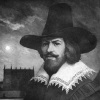

1605 yılında İngiltere Parlamentosu’nu bombalamayı amaçlayan başarısız bir planın arkasındaki isim Guy Fawkes (1570-1606), ülke tarihinin en karanlık figürlerinden biri olarak anımsanmaktadır. Eğer planı başarıya ulaşsaydı, kralı, bakanları ve mebusların büyük bir bölümünü öldürmeyi planlıyordu. Yakalandığı tarih olan 5 Kasım, İngiltere’de halen Guy Fawkes günü olarak kutlanmaktadır.

Bir Katolik olan Fawkes, kendi inancına dönük baskı yasalarını protesto etmek için bu planı yapmıştı. Komplonun ortaya çıkması ise zaten çeşitli cezalara ve ayrımcı yasalara tabi olan İngiliz Katoliklerinin durumunun daha da kötüleşmesine neden oldu. “Guy Fawkes Günü” bile başlangıçta Katolik karşıtı bir etkinlik olarak ortaya çıkmıştı. Zaman zaman bu etkinliklerde Papa’nın kuklası yakılıyordu.
York’ta doğan Fawkes on altı yaşındayken Katolik olmuştu. Fransa ve Hollanda ile olan din savaşlarına katılmak için 1593 yılında Kıta Avrupası’na gitti. Hollanda’dayken sürgüne gönderilmiş İngiliz Katolikleri ile tanıştı. Onlarla birlikte oluşturacağı grup, daha sonra birlikte planlayacakları komplonun da baş mimarı olacaktı.
Kraliçe 1. Elizabeth (1533-1603) döneminde Katolikler sürekli baskı altında tutulup Anglikan ibadetlerine katılmaya zorlandılar. Pek çok kişi kralın varisi 1. James (1566-1625) döneminde koşulların düzeleceğini ümit ediyordu. Ne var ki o da Elizabeth’in politikalarını devam ettirince büyük bir öfkeye kapıldılar. Komplonun asıl mimarı Robert Catesby (1573-1605) idi. 1604 Nisan’ında Fawkes’ı da yanına almıştı.
Fawkes, sahip olduğu askeri deneyim sayesinde komployu yönetmek için gruba seçilmişti. Komplocular parlamento binasının yanında bir ev kiraladılar. Bodrum katına gizlice barut fıçıları yerleştiriyorlardı. Parlamentonun açılış seromonisi sırasında saldırmayı planlıyorlardı. Bu sırada bütün hükümet üyeleri bir arada olacaktı. Saldırı başarıya ulaşırsa Catesby Katolik bir monarşi kurmak için halk ayaklanması başlatacaktı.
Komploculardan biri Katolik bir arkadaşı olan Lord Monteagle’yi (1575-1622) seremoniye katılmaması için uyarınca komplo açığa çıkmış oldu. Lord hükümete ihbarda bulundu ve bir hafta sonra Fawkes barut zulasının başında beklerlen yakayı ele verdi. Bir günlük yargılamanın ardından diğer komplocularla birlikte asıldı.
Ek Bilgiler
1- Fawkes’in yakalanmasının ardından barut fıçıları teste tabi tutuldu. Barut çürümüştü. Muhtemelen fitil ateşlense bile patlama gerçekleşmeyecekti.
2- Barut komplosunun ardından parlamento bir dizi ayrımcı yasa çıkardı. İngiliz Katolikler hukuk okumaktan yoksun bırakılıyor, subay olmaları ya da oy kullanmaları yasaklanıyordu. 1829 yılına kadar Katolikler ülkede oy kullanamadılar.
3- 1834 yılında sobadan sıçrayan ateş nedeniyle parlamento binasında yangın çıktı. Günümüzde hem Lordlar hem de Avam Kamarası’na ev sahipliği yapan Westminster Sarayı, 1840’lar ve 1850’lerde inşa edildi.